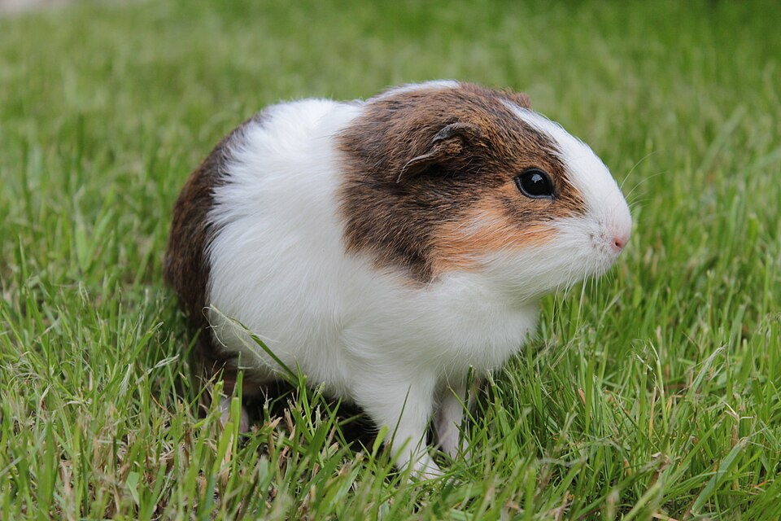

Scurvy in guinea pigs: signs of vitamin C deficiency and prevention
In short
Guinea pigs can’t make vitamin C themselves, so they need it from food every day. According to PetMD, signs of deficiency can appear after just 2–3 weeks of a poor diet: the coat, appetite and weight get worse, wounds heal slowly and moving becomes painful. A vet finds the cause and prescribes treatment.
If your animal’s condition gets worse, see a vet straight away. Don’t put off the visit and don’t treat your pet yourself based on this article.
Reference material. This is general information from open sources, not a diagnosis or a prescription, and it does not replace a consultation with a vet. Talk to a vet before making any decision about your animal’s health. How we prepare our articles

Why vitamin C must come from food
Unlike most animals, guinea pigs lack the enzyme needed to make vitamin C, so they get it only from food. Vitamin C is needed, among other things, to make collagen. PDSA warns that without it a guinea pig is at risk of scurvy.
How a deficiency shows
PetMD, in an article written by a vet, lists these signs:
- a rough, dull or patchy coat
- lethargy and a depressed look
- poor appetite and weight loss, or poor weight gain in young animals
- wounds heal slowly and infections become more frequent
- dental problems and pain when chewing
- diarrhoea
- bone and joint pain, swollen joints: the guinea pig is reluctant to move or limps
In severe cases a deficiency can lead to fractures, paralysis, sepsis and death. Many of these signs also occur with other diseases, so a vet has to find the cause.
How quickly it happens
According to PetMD, signs can appear after just 2–3 weeks of a diet that is too low in vitamin C. The most common reasons are too little fresh produce, no fortified food, or food and treats that are too old.
Fresh vegetables every day
The RSPCA calls fresh vegetables and herbs an excellent source of vitamin C. Among foods that can be given often, it lists bell peppers, cucumber, celery, romaine lettuce and parsley. PetMD lists red and green peppers, broccoli, cauliflower, strawberries and kiwi among foods rich in vitamin C.
Sources disagree about high-calcium greens. The RSPCA gives kale and spinach only as treats a few times a week. PetMD’s care sheet advises avoiding parsley, spinach, kale and dandelion because of the risk of stones, while PetMD’s vitamin C article lists kale and parsley as good sources. If in doubt, ask your vet.
Pellets lose vitamin C
- Choose pellets made for guinea pigs, grass-based and fortified with vitamin C.
- Vitamin C in food breaks down over time, faster with heat, light and air.
- PDSA advises storing pellets somewhere dry, cool and dark and using them within three months of purchase. According to PetMD’s care sheet, vitamin C levels drop sharply three months after the production date.
- The RSPCA advises giving a fresh portion of pellets daily instead of topping up the old one, and not feeding food past its best-before date.
Vitamin C in water and supplements
Vitamin C in drinking water is unreliable: it breaks down quickly, and PetMD says such additives last less than a day. PDSA advises against adding it to water also because the taste can make a guinea pig drink less.
According to PDSA, a guinea pig that gets a balanced diet with fresh greens every day does not need separate supplements. Too much vitamin C can also do harm: Improve International, a publisher for vets, links excessive amounts with urinary stones and joint problems. So it is worth discussing supplements with your vet.
What a vet will do
According to PetMD, the vet examines the guinea pig and asks about its diet, and sometimes takes X-rays or a blood test. Correcting the diet is often enough, and in severe cases the vet prescribes vitamin C. Dental changes can last a long time.
What to note down before you call the vet
- what you feed and how much fresh produce a day
- the production date and opening date of the pellet bag
- whether you give supplements, which ones and how
- weight over time
- a video of how the guinea pig moves
Notes like these are easier to keep in one place. That’s what we’re building Roddi Health for.
Get early accessSources
- PetMD: vitamin C deficiency in guinea pigs
- PetMD: guinea pig care sheet
- PDSA: your guinea pig’s diet
- RSPCA: what to feed a guinea pig
- RSPCA: guinea pig health and welfare
- Improve International: guinea pigs and the vitamin C problem
Facts checked against the sources on 16 November 2026. Found a mistake or a link that doesn’t open? Write to roddihealth@gmail.com.
Roddi Health is not a veterinary clinic and does not provide veterinary services. This article is for information only, may be incomplete or out of date, and does not replace an examination by a vet. You make your own decisions about caring for your animal. Sources are named for reference: they did not write or endorse this text. More about our blog articles.